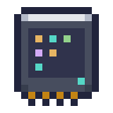
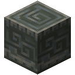
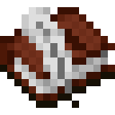
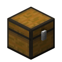

Milestones
Every milestone is an advancement, in the frame the advancement screen gives it, and the frame lights up once you have made it. They run roughly in the order a world unfolds, though most chapters can be taken in any order.
A first model
 Checkpoint
Checkpoint
Save a trained model. Cable an Embedding Table to a Model Core, train it on
the Forecast Dataset and save it: Getting Started.
What Comes Next
Save a model that passes the Forecasting test. Saving tests a model on every benchmark; a first model passes this one once
it has practised long enough.
 A Watched Pot
A Watched Pot
Place a Forecaster by your furnaces or crops. It writes down what the furnaces and crops around it do:
The Forecaster.
 Ahead of Time
Ahead of Time
Have a Forecaster run your furnaces or crops ahead with a model it trusts. A model that passes Forecasting is trusted with machines once they have made
about a dozen items; your own field may take a model trained on the Forecaster's own log.
 Further Ahead
Further Ahead
Have Forecaster II run blocks eight times as fast. The Fabricator makes Forecaster II from a transformer photomask; a model
within 5% of its blocks runs them eight times as fast: The Forecaster.
 Borrowed Time
Borrowed Time
Run a block ahead with an Hourglass bound to a Forecaster. The Fabricator makes it from an attention photomask, and it keeps time
while carried. Sneak-use a Forecaster that runs blocks ahead to bind it, then use it on one of those blocks:
The Forecaster.
 Agent
Agent
Make an agent. Craft one and place it where it should live: Agents.
 Hello, World
Hello, World
Give an agent a program of your own. Type one in its screen, or click it together from the palette.
Storage

Make a Storage Drive. It keeps any number of kinds: Storage.
 Everything in One Place
Everything in One Place
Place a Storage Terminal. Link it to a Drive Rack with Storage Links.
 Hands Off
Hands Off
Place a Port, which moves items between the network and an inventory. Hold its front against a chest or a machine, and link its back to the
network.
 Made to Order
Made to Order
Have an Assembler craft for your network. Draw a recipe in an Assembler's grid and tell it how many to
keep.
Just Ask
Have your network make something you asked for at a Storage Terminal. Click something the network can make in a Storage Terminal, ask for an amount
and start it: Storage.
The old world

Find a ruin of the people who were here before. The old world's places stand far apart, each in the land that suits it:
Ruins.
 Lost Words
Lost Words
Dig an archive shard out of a ruin. Each is a piece of one record, with some of its text lost:
The Archive.
 Bearings
Bearings
Tune a Wayfinder to a ruin a shard told you of. Use a Wayfinder and choose a kind of ruin; reading shards adds the places they
write about: Ruins.
 The Archive
The Archive
Make an archive drive to file shards into. Shards of the same record filed together make one better copy.
 Restoration
Restoration
Place a Reader. It restores a record's lost text with a model of yours.
 Words, Not Letters
Words, Not Letters
Learn a vocabulary in a BPE Forge. A vocabulary learned from what you have recovered lets a model read words
instead of letters: Tokens.
It Reads
Save a model that passes the Reading test. Train on an Archive Drive until the test loss is 1.40 or less:
Models and Tests.
Machines from scratch
 The Bench
The Bench
Place a Bench, where modules are wired from primitives. Each spec comes with cases that break the obvious design:
The Bench and the Fabricator.
 Lithography
Lithography
Place a Fabricator, which makes machines from designs. Photomasks found in the ruins work in it too.
 Rows by Columns
Rows by Columns
Verify a design for Matrix Multiply.
The Layer
Verify a design for the Linear Layer. It opens once matrix multiply is verified.
Feed Forward
Verify a design for the Feed-Forward Block. It opens once the linear layer is verified.
On Average
Verify a design for Mean.
In Range
Verify a layer norm that survives flat and far rows. It opens once mean is verified.
A Smooth Bend
Verify a design for GELU.
Overflow
Verify a softmax that survives large scores. Scores of a thousand overflow the obvious design.
Paying Attention
Verify a design for Attention. It opens once softmax is verified.
The Block
Verify a design for the Transformer Block. It opens once attention is verified.
From Scratch
Verify every spec on the Bench.
 Residual
Residual
Lay a residual stream, the backbone every transformer is built around. Transformer layers read from it and add to it:
The Residual Stream.
Models that work
Each benchmark is passed by saving a model that passes it; the table in Models and Tests says what to practise for each.
A Place for Everything
Save a model that passes the Recall test. Practise on the Storage Dataset.
The Way Home
Save a model that passes the Reversal test. Practise on the Errand Dataset.
Once More From the Top
Save a model that passes the Induction test. Practise on the Pattern Dataset; it takes two layers of
attention.
Pigeonholes
Save a model that passes the Sorting test. Practise on the Sorting Dataset.
Steady Hand
Save a model that passes the Control test. Practise on the Process Dataset: the Core plays melts with the
model's own choices, and it takes a model that attends to the whole melt.
Prospector
Save a model that passes the Survey test. Practise on the Survey Dataset; it takes attention that knows
where each block stands in a row.
Steady Wings
Save a model that passes the Pilot test. Practise on the Flight Dataset: the Core flies the model's own
flights, and it takes a model that reads the flight back to its start.
Plain Words
Save a model that passes the Orders test. Practise on the Orders Dataset; it takes a model too big to
carry.
A Whole Model
Save one model that passes every test. A Model Core practises up to four kinds at once.
Putting models to work
 At Your Service
At Your Service
Place a Model Server. A bigger model stays in a server and answers over relays:
Serving Models.
 Within Reach
Within Reach
Place a relay. The plans turn up on relay masts and in vaults.

Have an agent carry out an order its model understood. Start a chat message with its name, such as Pip, bring me some bread. Its model
has to have practised orders.
 Seen It Before
Seen It Before
Have an agent copy a build. Mark a build's corners and the block its copy stands on, and hand the marks to an
agent whose model passes Induction: The Architect.

Have an agent move a build, contents and all. The same marks, with move instead of copy.
 Strike
Strike
Have a Surveyor find an ore with its model. The Fabricator makes a Surveyor from an attention photomask; give it a model that
passes Survey: The Surveyor.
Flight
 Lift Off
Lift Off
Fly with a flight frame its pilot holds. Put a pilot that passes Pilot in a charged flight frame, wear it, and jump twice:
Flight.
Power
 Live Wire
Live Wire
Place a Combustion Generator. It burns what a furnace burns: Power.
 Twice Over
Twice Over
Smelt one ore into two ingots in a Smelter. The Fabricator makes a Smelter from a transformer photomask; give it power and
raw ore.
Salvage
 Salvage
Salvage
Find a salvaged model in a ruin. Each one failed in its own way: Salvaged Models.
Answering
Repair the field model that never answered.
No Peeking
Repair the field model that was never wrong.
First and Last
Repair the errand model that came home the wrong way.
Steady Hands
Repair the storeroom model that burned out.
Shortcuts
Repair the tall model that never learned to read.


 ForecasterFurnaceForecaster IIHourglassAgentProgram CardStorage DriveStorage TerminalPortAssemblerChiseled TuffArchive ShardWayfinderArchive DriveReaderTokenizerBenchFabricatorBlank PhotomaskResidual Stream
ForecasterFurnaceForecaster IIHourglassAgentProgram CardStorage DriveStorage TerminalPortAssemblerChiseled TuffArchive ShardWayfinderArchive DriveReaderTokenizerBenchFabricatorBlank PhotomaskResidual Stream


 Model ServerRelayBook and QuillSurvey RodChestSurveyorFlight FrameCombustion GeneratorSmelterSalvaged Model
Model ServerRelayBook and QuillSurvey RodChestSurveyorFlight FrameCombustion GeneratorSmelterSalvaged Model